S11 / SKENARIO
Virtual Architect
Bima harus menyetujui ADR sebelum handoff ke Implementer.
Level 3RaniBima
Durasi 12 menit · estimasi latihan
Cerita tim
Rani langsung coding fitur approval bertingkat tanpa desain. Saat review minggu kedua, Bima baru lihat logika retry bisa menyebabkan approval ganda.
Yang disiapkan di repo
P11 — epik "Approval bertingkat (>1 jt perlu 2 approver)" tanpa desain.
Pilihan solusi
Agent architect menulis ADR + task breakdown → Tech Lead approve via komentar → implementer → handoff ke security-reviewer.

Baca alur sebagai teks
- Architect → menulis → ADR
- ADR → ditinjau oleh → Tech Lead
- Tech Lead → menyetujui sebelum → Implementer
- Implementer → meminta review dari → Security Reviewer
Langkah demo
- Baca issue latihan dan kriteria selesai.
- Gunakan prompt atau perintah berikut. Prompt atau perintah
Tulis ADR approval bertingkat, termasuk retry dan transaksi. Jangan menulis kode. - Periksa hasil: Bima harus menyetujui ADR sebelum handoff ke Implementer.
Before / After
Belum di-capture · S11-before.png
Belum di-capture · S11-after.png
- Baseline
- Epik tanpa keputusan desain
- Target setelah latihan
- ADR disetujui sebelum coding
- Verifikasi
- Bima harus menyetujui ADR sebelum handoff ke Implementer.
Manfaat untuk tim
- Desain jadi tahapan eksplisit; masalah ditangkap sebelum kode; dokumentasi desain terbentuk otomatis.
Bukti yang bisa diperiksa
- Issue GitHub · S11
S11-01-adr-pr.png· belum di-captureS11-02-impl-pr.png· belum di-capture
Screenshot dan metrik yang tidak tersedia tidak dianggap sebagai hasil live.
Ulangi latihan
Jalankan dari root repo latihan. Reset hanya menyentuh worktree lokal yang bersih.
npm run reset